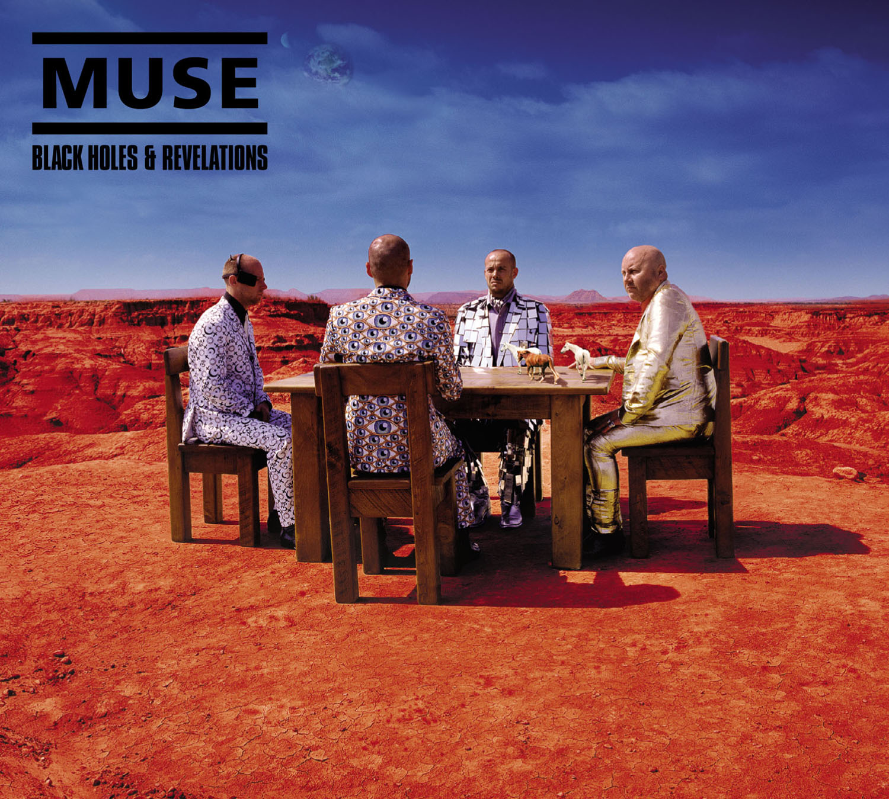

Discografía de MUSE
Showbiz, 1999
- Publicación: 4 de octubre de 1999
- Discográfica: Mushroom (MUSH #53)
- Formatos: CD, 2 LP, CS, MD
- Tracklist:
- Sunburn
- Muscle Museum
- Fillip
- Falling Down
- Cave
- Showbiz
- Unintended
- Uno
- Sober
- Escape
- Overdue
- Hate This and I'll Love You
Origin of Symmetry, 2001
- Publicación: 17 de julio de 2001
- Discográfica: Mushroom (MUSH #93)
- Formatos: CD, 2 LP, CS, MD
- Tracklist:
- New Born
- Bliss
- Space Dementia
- Hyper Music
- Plug in Baby
- Citizen Erased
- Micro Cuts
- Screenager
- Darkshines
- Feeling Good
- Megalomania
Absolution, 2003

- Publicación: 21 de septiembre de 2003
- Discográfica: A&E
- Formatos: CD, CD/DVD, 2 LP, CS
- Tracklist:
- Intro
- Apocalypse Please
- Time Is Running Out
- Sing For Absolution
- Stockholm Syndrome
- Falling Away With You
- Interlude
- Hysteria
- Blackout
- Butterflies and Hurricanes
- The Small Print
- Endlessly
- Thoughts of a Dying Atheist
- Ruled By Secrecy
Black Holes & Revelations, 2006

- Publicación: 3 de julio de 2006
- Discográfica: Helium-3
- Formatos: CD, CD/DVD, CS
- Tracklist:
- Take a Bow
- Starlight
- Supermassive Black Hole
- Map of the Problematique
- Soldier's Poem
- Invincible
- Assassin
- Exo-Politics
- City of Delusion
- Hoodoo
- Knight of Cydonia
The Resistance, 2009

- Publicación: 14 de septiembre de 2009
- Discográfica: Helium-3
- Formatos: CD, CD+DVD, 2 LP, DD
- Tracklist:
- Uprising
- Resistance
- Undisclosed Desires
- United States of Eurasia
- Guiding Light
- Unnatural Selection
- MK Ultra
- I Belong To You
- Exogenesis: Symphony Part 1 (Overture)
- Exogenesis: Symphony Part 2 (Cross-pollination
- Exogenesis: Symphony Part 3 (Redemption)
The 2nd Law, 2012

- Publicación: 1 de octubre de 2012
- Discográfica: Helium-3
- Formatos: CD, CD+DVD, 2 LP, DD
- Tracklist:
- Supremacy
- Madness
- Panic Station
- Prelude
- Survival
- Follow Me
- Animals
- Explorers
- Big Freeze
- Save Me
- Liquid State
- The 2nd Law: Unsustainable
- The 2nd Law: Isolated System